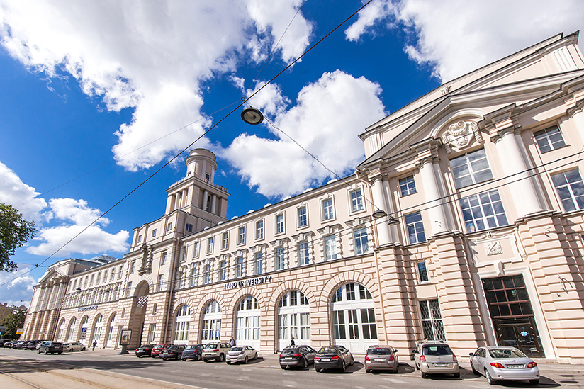

Кронверкский проспект д. 49
Изначально, Второй дом городских учреждений (Кронверкский проспект, д. 49) был построен в 1910-1914 гг. (арх.р М. М. Перетяткович при участии М. С. Лялевича) с использованием элементов архитектуры классицизма.

Дом расположен на территории существовавшего здесь с 1711 г. Сытного рынка, где не только торговали, но и оглащали царские указы, и даже совершали казни. Участок строительства был освобожден от некоторых деревянных построек рынка, и пространство стало почти пустынным. Новое здание свободно расположилось вдоль проспекта, заняв всю длину лицевой линии квартала. Благодаря этому местоположению оно стало важным объектом крупной общественной зоны, развивающейся по центральной оси Кронверкского проспекта между Народным домом и расположенным в глубине квартала главным корпусом Сытного рынка.
Градостроительное и общественное значение Дома городских учреждений предопределило строгую симметричность его композиции и классицистическую стилистику лицевого фасада. Центральная ярусная башня роднит это произведение М.М. Пepeтятковича с европейскими ратушами. Здание строилось на средства Городской думы для размещения различных городских учреждений (отсюда название).
Разрев и детали фасада Дома
После Октябрьской революции в правом крыле Дома находилась крупнейшая в Ленинграде биржа труда под руководством П. К. Медведева. В 1929 г. биржа прекратила существование и стала Сектором по регулированию организованного набора рабочей силы при облисполкоме.
В конце 1930-х гг. здание передано Высшей профсоюзной школе. После Великой Отечественной войны стало одним из корпусов Ленинградского института точной механики и оптики.
В 1928-1929-х гг. адрес Кронверкский проспект, 49, комната 46, указан как адрес издательства «Вопросы Труда».
В адресно-справочной книге 1940 г. этот адрес указан как адрес 29-ого отделения милиции Ленинграда.
Городская биржа труда, 1918 г.
1 этаж
Нижний этаж, обработанный мощными рустами и служащий цоколем для двух верхних, прорезан по фасаду высокими и широкими арками застеклённых проёмов, а центральный ризалит - ещё более высокой аркой проезда. На уровне двух верхних этажей боковые ризалиты декорированы колоннами, несущими треугольные фронтоны, украшенные скульптурой; в центре здания 4 гранная массивная башня, увенчанная куполом.
1 этаж сдавался под магазины.
Верхний этаж
После победы Февральской революции в двух комнатах верхнего этажа разместился первый легальный Петербургский комитет Российской социал-демократической рабочей партии (вскоре переехал в Кшесинской особняк).
Другие этажи
На других этажах располагались торговая палата, камера мирового судьи, аукционный зал, зал для заседаний и др.
Фасад
На верху здания букрании (бычьи черепа). На доме два настенных знака - ОСОАВИАХИМа "Готов к противовоздушной и противохимической обороне" (устанавливались в 1938-1941 гг.)
Мемориальная доска сотрудникам и студентам ЛИТМО
В первые дни Великой Отечественной войны состоялся митинг студентов и сотрудников ЛИТМО, после которого 194 студента и 79 сотрудников подали заявления с просьбой отправить их на фронт.
В начале июля 1941 г. две группы добровольцев из ЛИТМО общей численностью около 450 человек влились в состав второй дивизии народного ополчения Октябрьского района, а 5 июля первая группа ополченцев нашего вуза отправилась на фронт.
Уже в июле 1941 г. в ЛИТМО была организована военно-ремонтная база - филиал 75-й артиллерийской базы Ленинградского военного округа. В состав венно-ремонтной базы входили оптико-сборочный и механический цеха, в которых проводились разнообразные работы для нужд фронта: ремонтировали оптические наблюдательные и прицельные приборы, изготавливали сопловую часть снаряда для знаменитых «катюш», а также некоторые детали для мин и взрывателей.
В конце июня 1941 г. на основании постановления Военного Совета Северного фронта началось возведение оборонительных сооружений. Оставшиеся в городе студенты и сотрудники регулярно выходили на это строительство. Были организованы команды управления связи, медико-санитарные, аварийно-восстановительные и другие
За тысячи километров от блокированного города был эвакуирован в Новосибирскую область Ленинградский институт точной механики и оптики. В январе 1943 г. там, в городе Черепаново, возобновились учебные занятия ЛИТМО. Так же, как в мирные дни, читались лекции, продолжались научные исследования.
Летом 1944 г., после поражения немецко-фашистских войск под Ленинградом и снятия блокады, институт вернулся в родной город и возобновил свою деятельность.
Мемориальная доска преподавателям и студентам ЛИТМО
"Когда положение в Ленинграде немного улучшилось, мы перешли наряду с ремонтом приборов к изготовлению сложных коллиматоров. Отливки оснований изготовляли на Кировском заводе, а обрабатывали у нас, нередко вручную. Всю войну работала военно-ремонтная база, вписала славную страницу в историю нашего института: она принесла большую помощь воинам Ленфронта, вернув в строй многие тысяч необходимых действующей армии оптических приборов. "
Опубликовано в газете «Кадры приборостроению» № 25 (1153), 17 октября 1983 г.
Мемориальная доска Бориса Мыльникова
19 февраля 2015 г. в Университете состоялось торжественное открытие мемориальной доски, посвященной памяти выпускника вуза, генерала-полковника Федеральной службы безопасности и первого руководителя Антитеррористического центра Судружества Независимых государств Бориса Мыльникова.
Борис Мыльников окончил Ленинградский институт точной механики и оптики в 1975 г. Служил в рядах ленинградского Комитета государственной безопасности, затем — в Федеральной службе безопасности по Свердловской области и Ставропольскому краю. В течение 30 с лишним лет он обеспечивал безопасность страны, неоднократно участвуя в спецоперациях по освобождению заложников в Чечне и других опасных для жизни служебных заданиях. Кульминацией его работы стало создание Антитеррористического центра государств-участников СНГ. Мыльников стал первым руководителем этого центра, который до сих пор успешно охраняет Россию от угрозы террора.
Меомриальная доска Борису Мыльникову
Корпус на Саблинской улице (кронверкский проспект)
Боковые крылья Дома учреждений охватывали с боков рыночную площадь, а арка под башней вела прямо к торговому зданию Сытного рынка.. Городской дом и торговое здание строились почти одновременно и по замыслу Лялевича должны были составлять единый архитектурный ансамбль. Если присмотреться, то здание рынка строго ориентированно на арку Дома. Однако замысел был нарушен при Корпус на Саблинской улице (кронверкский проспект)строительстве в 1970 г. нового корпуса на Саблинской улице.
В послевоенные годы институт быстро рос — появлялись новые специальности, образовывались новые факультеты, кафедры, лаборатории, увеличивался набор студентов. Передача институту бывшего Дома городских учреждений лишь на время облегчила положение с площадью. Построенные еще до революции оба основных здания института были плохо приспособлены для учебных целей.
Уже в начале 1960-х гг. вновь стала остро ощущаться нехватка аудиторий, помещений для кафедр, лабораторий. Поэтому в 1963 г. было принято решение о строительстве здания рядом с корпусом на Кронверкском проспекте, на территории, принадлежавшей Сытному рынку.
Строительство началось в 1965 г. Первоначально срок окончания строительства был намечен на первый квартал 1968 г. Однако лишь к началу 1970-1971 учебного года новый корпус ЛИТМО на Саблинской улице, 14, был сдан наконец в эксплуатацию.
Своей современной архитектурой построенное для ЛИТМО здание выделяется среди домов дореволюционной застройки площади рынка. Оно отражает стиль 1960-х гг., выполнено в виде простых прямоугольных объемов, имеет широкие окна по фасаду и просторные помещениями внутри. Внешние фасады облицованы белой и черной керамической плиткой, придающей ему нарядный вид и подчеркивающей простоту архитектурных форм.
Проектировали его и вели архитектурный надзор за строительством ленинградские архитекторы —А.Н.Виноградов (главный инженер проекта), Г.А. Терзибанян, Н.П.Можейко.